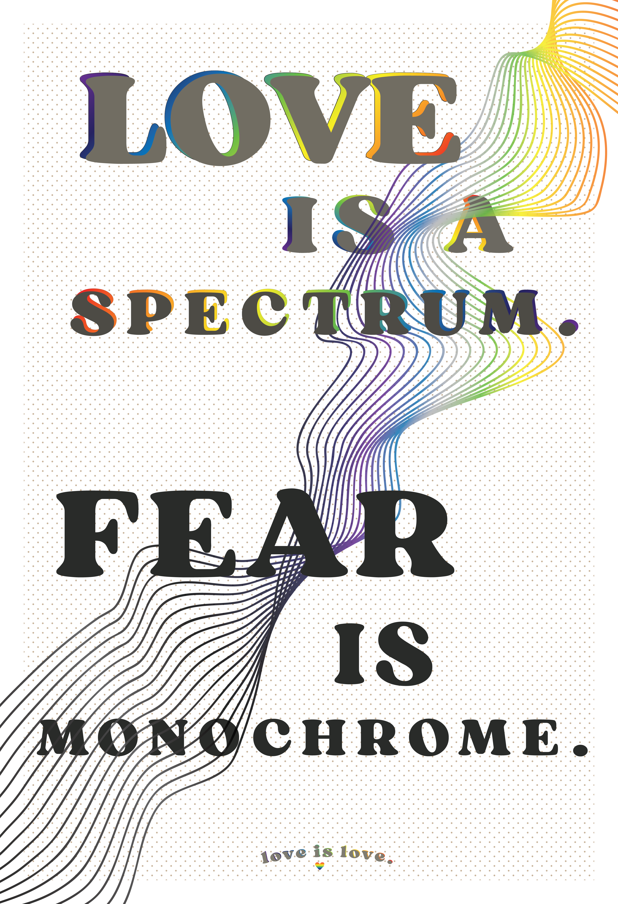
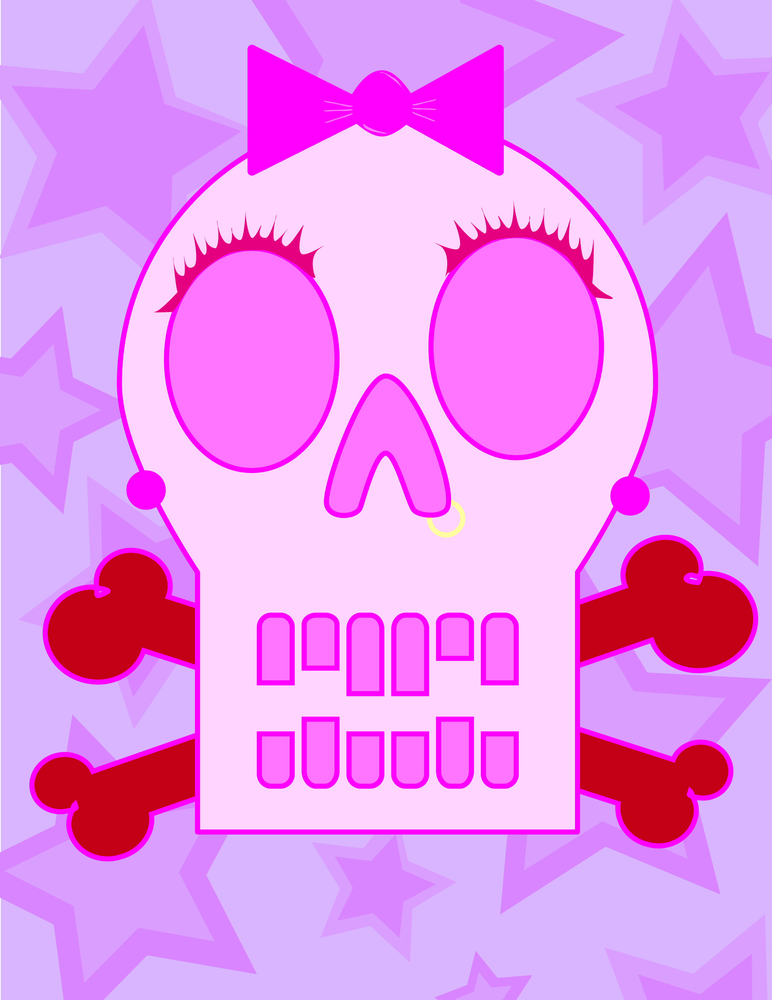
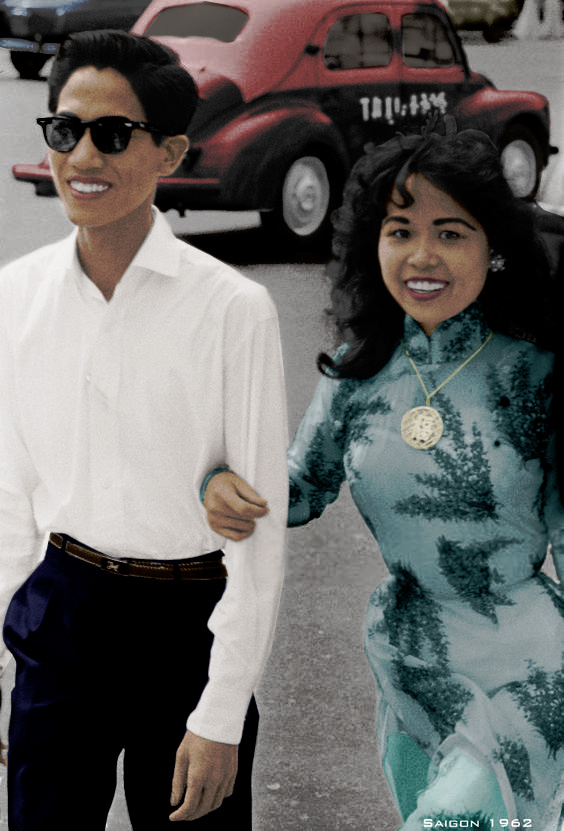

Portfolio
Illustrator
 Desert Exercise: For this exercise, the purpose of it was to become more familiar with the gradient tool within Adobe Illustrator. I recreated a desert landscape and experimented with a color palette. Using the different gradients and colors, I was able to create a certain depth in the picture to show the full scenery. I incorporated other skills within the exercise such as precise pen tool use for the small features at the bottom and also other brushes to create the scattered look of stars.
Desert Exercise: For this exercise, the purpose of it was to become more familiar with the gradient tool within Adobe Illustrator. I recreated a desert landscape and experimented with a color palette. Using the different gradients and colors, I was able to create a certain depth in the picture to show the full scenery. I incorporated other skills within the exercise such as precise pen tool use for the small features at the bottom and also other brushes to create the scattered look of stars.

Pen Tool Drawing: For this exercise, the purpose of this was to practice pen tool precision and become more familiar with the power the pen tool has. My objective was to make a sketch of any real-life view using the pen tool. I chose a corner of my dorm which contained many intricate lines and folds to really challenge myself when it came to the pen tool. In the end, my precision increased and I became more used to the different usages the pen tool had and learned to use it more efficiently.
Final Poster Piece: For the project, my objective was to pick any social issue and to create a campaign poster for it as my final project in one of my graphic design courses. While going through this process, I was supposed to incorporate many of the elements that I learned during the class.
In the end, I was able to come up with this campaign poster for homophobia during pride month. I used many of the same techniques I learned in class but also incorporated new techniques that I envisioned when I first came up with the piece. This piece received a large amount of positive feedback but also a fair amount of criticism that I can use to apply for future projects.
 Moonlight Exercise: For this exercise, it was a simple and short activity that focused on strategically overlapping layers and more pen tool practice. I was also able to play around with transparency within layers in this activity to create shadows and more depth. I used different shades of the same color to add on to the depths and create more of a spotlight for the main subject in this.
Moonlight Exercise: For this exercise, it was a simple and short activity that focused on strategically overlapping layers and more pen tool practice. I was also able to play around with transparency within layers in this activity to create shadows and more depth. I used different shades of the same color to add on to the depths and create more of a spotlight for the main subject in this.
 Ninja Exercise: For this exercise, the purpose of it was to explore a majority of Adobe Illustrator to become familiar with certain tools and the possibilities the program has. I created these ninjas using the same technique but differing it for each of them to create new poses. Similarly, I also was able to learn new techniques when it came to the weapons that the ninjas hold. I also experimented with stroke weights and adding multiple strokes to create that depth within the characters.
Ninja Exercise: For this exercise, the purpose of it was to explore a majority of Adobe Illustrator to become familiar with certain tools and the possibilities the program has. I created these ninjas using the same technique but differing it for each of them to create new poses. Similarly, I also was able to learn new techniques when it came to the weapons that the ninjas hold. I also experimented with stroke weights and adding multiple strokes to create that depth within the characters.

Pop Art Self Portrait: For this exercise, it was inspired by pop art. The main objective was to experiment with colors and include the elements that we see from famous artists such as Andy Warhol. I experimented with patterns and the placements of where I would want them. I also paid attention to shadows and highlights and made sure to include them in this piece.
Skull Exercise: For this exercise, it was one of my first experiences with Adobe Illustrator so the objective was to mess around with the program and become more used to all the tools it had to offer. I ended up going off of a pink and red color palette to create this skull. I used lots of different tools, techniques, strokes, etc. in this exercise that prepared me for later projects.
 Social Media Post: For this small project, the objective was to create a social media poster that would allow an audience to get to know you better but to also keep it short. I included small fun facts so that it would feel more personal and then when posted, it would be followed by a description as well. I picked purple and pink as my main colors to go for a playful aura for this social media post. In the end, it was a fun and quick project to work on to show more of my design style and personality.
Social Media Post: For this small project, the objective was to create a social media poster that would allow an audience to get to know you better but to also keep it short. I included small fun facts so that it would feel more personal and then when posted, it would be followed by a description as well. I picked purple and pink as my main colors to go for a playful aura for this social media post. In the end, it was a fun and quick project to work on to show more of my design style and personality.
Photoshop
 Dramatic B&W Exercise: For this exercise, the main objective was to become more familiar with layers and the tools Adobe Photoshop has to offer. I mainly learned the mask tool for this activity. I turned the entire picture black and white and picked a subject to bring color back to. In the end, it creates a bold contrast between the color and the gray colors.
Dramatic B&W Exercise: For this exercise, the main objective was to become more familiar with layers and the tools Adobe Photoshop has to offer. I mainly learned the mask tool for this activity. I turned the entire picture black and white and picked a subject to bring color back to. In the end, it creates a bold contrast between the color and the gray colors.

B&W Recolor Exercise: For this project, it was similar to the Dramatic B&W exercise but expanded on those techniques used. The objective was to find a black & white image and fully recolor it. The brush and paint tool were heavily used for this project. Precision and accuracy in color were helpful when completing this as well. While being a tedious project, it allowed me to learn many new techniques to create more of a realistic recolor.
Physical Art

Asymmetrical Piece: For this project, the main objective was to play around with negative and positive space and then add in another element, the space when B&W were mixed. I looked at a variety of pictures and magazines to then find intricate outlines within the spaces to create new biomorphic and abstract shapes.
With all my new shapes, I assembled them into a composition that I found interesting enough. After that, I carefully chose what I wanted to be black, white or gray. The project required a large amount of precision since all of the lines were free-handed with paint. In the end, I was able to create an asymmetrical piece that allowed me to introduce myself to mixing positive and negative spaces.
 Symmetrical Piece: For this project, it is another version of my asymmetrical piece that included biomorphic shapes. This version is symmetrical instead. I created the composition of this one to be more intricate to make the symmetry more interesting to look at. I used the different placements of black, white and gray to give some of the abstract shapes a “see-through” effect as well.
Symmetrical Piece: For this project, it is another version of my asymmetrical piece that included biomorphic shapes. This version is symmetrical instead. I created the composition of this one to be more intricate to make the symmetry more interesting to look at. I used the different placements of black, white and gray to give some of the abstract shapes a “see-through” effect as well.

Paper Pattern Piece: For this small project, the main objective was to find interesting textures within the real world and transfer that into a piece. The usage of black, white and gray were repeated multiple times in this course to become familiar with the positive and negative space.
Similar to other pieces, I had to look at pictures and read in between the lines to find interesting silhouettes and shapes that I could use. I created a symmetrical composition and strategically placed where I wanted a pattern or a colored space. The project required precision with free-hand cutting to create the sharp patterns and to keep it symmetrical.
 Metamorphosis Final Project: For this project, the objective was to take all the elements that I have seen in class and to put it all in one piece. While including all of these elements, we were supposed to create a seamless transition for it and have it turn out to be a kind of “metamorphosis”.
Metamorphosis Final Project: For this project, the objective was to take all the elements that I have seen in class and to put it all in one piece. While including all of these elements, we were supposed to create a seamless transition for it and have it turn out to be a kind of “metamorphosis”.
Many people came up with themes so that it would be more helpful to create this metamorphosis piece. I chose the two opposing words of “rigid” and “mellow” to depict a sharper and softer side to my piece. From there, I included the elements I encountered in the courses such as the biomorphic shapes, the different grayscale, textures, etc.